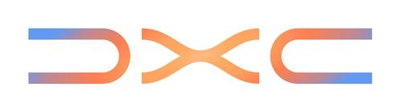

Cloud & AI Platform Engineer
Azure & Hybrid Cloud · Infrastructure Automation · AI Platforms
Cloud & AI Platform Engineer with experience at DXC Technology Morocco and M-AUTOMOTIV Retail. Specialized in Azure, hybrid cloud infrastructure, Nutanix, identity and access management, and automation. Experienced in monitoring, backup and recovery, infrastructure reliability, and cloud security.
Specialized in cloud platforms, DevOps, data engineering, and AI-driven automation. Combines practical infrastructure experience with a strong focus on reliability, security, and scalable solutions. Based in Casablanca, Morocco.
I support hybrid infrastructure, manage Windows Server environments, and automate daily operations with Python and PowerShell to help teams work reliably and securely.

Advanced studies in big data, cloud computing, data engineering, and AI technologies.
Academic foundation in mathematics, information technology, and systems thinking.
Completed secondary education with a concentration in mathematical sciences.
Microsoft AI certifications earned through AI Skills Fest 2026.
Microsoft Azure Administrator, delivered by Koenig Solutions - March 2026
Designing Microsoft Azure Infrastructure Solutions, delivered by Koenig Solutions - April 2026
Cloud Computing Azure, delivered by Jobintech - February 2026
IBM - December 2025
IBM SkillsBuild - November 2025
Cloud administration, virtual machines, storage, networking, and Azure Monitor
Nutanix HCI, virtualization, compute, storage, and infrastructure availability
Microsoft Entra ID, Active Directory, Group Policy, IAM, and endpoint management
Azure AI Foundry, Microsoft Copilot, generative AI, AI agents, and RAG
Python, Terraform, Ansible, and PowerShell for efficient operations
Azure Monitor, Prometheus, Grafana, and ELK Stack
Data protection, operational continuity, and resilient infrastructure
TCP/IP, DNS, DHCP, VPN, load balancing, reverse proxy, and cloud networking
Docker and Kubernetes alongside Hyper-V, VMware, and Nutanix HCI
Azure DevOps, Git, Jenkins, Jira, and Agile/Scrum practices
Big Data and Cloud Computing foundation supporting AI and cloud platforms
Cloud & AI Platform Engineer, supporting the operation and maintenance of Nutanix-based hybrid infrastructure for Montréal Airport.
Administered Windows Server environments through troubleshooting, patching, and operational support.
Supported secure access, device management, and enterprise IT administration using Microsoft Entra ID and Microsoft Intune.
Managed storage, backup, and recovery operations to support data protection and business continuity.
Contributed to an on-premises Application Dependency Mapping solution using Python and ELK Stack during a final-year internship.
Native Arabic with advanced French and English communication skills.
Hands-on work across hybrid infrastructure, automation, monitoring, and AI-enabled cloud platforms
Contributed to the implementation of an Application Dependency Mapping solution on an on-premises infrastructure, improving visibility into application dependencies and network interactions.
Final-year internship at M-AUTOMOTIV Retail, April to August 2025
Supported a Nutanix-based hybrid environment, contributing to virtualization, compute, storage, infrastructure availability, resilience, and operational continuity.
Cloud & AI Platform Engineer, February to August 2026
Administered Windows Server environments through troubleshooting, patching, and day-to-day operational support in an enterprise cloud environment.
Supported identity and endpoint management using Microsoft Entra ID and Microsoft Intune, helping provide secure access and enterprise device administration.
Managed storage, backup, and recovery operations to help ensure data protection, infrastructure reliability, and business continuity.
Automated administrative and operational tasks to improve efficiency and reduce manual intervention across cloud and systems environments.